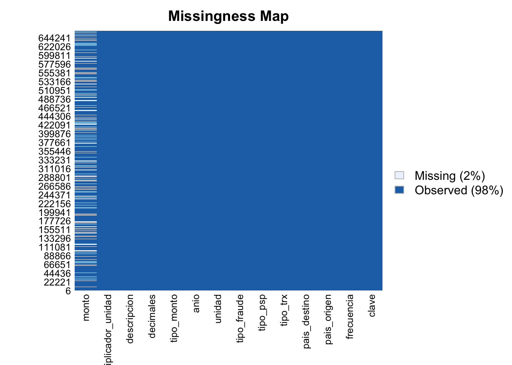

Análisis Exploratorio de Datos
2026-02-27
Chapter 1 Contexto inicial
La Unión Europea es la unión politica de estados que cooperan y coordinan sus gobiernos a traves de instituciones comunes como el Parlamento, el Consejo, el Tribunal de Justicia que velan por el bienestar integral de todos sus países miembro. Una de sus caracteristicas más llamativas es la unificación casi total de la moneda principal (El euro) utilizada para las actividades comerciales. Esta uniformidad posibilita la existencia de la infraestructura T2, que permite que las transferencias y movimientos bancarios se reflejen en tiempo real.
Aún así, es importante resaltar que no todos los estados que constituyen la UE utilizan el euro. De la misma manera, existen territorios como Andorra, Mónaco, San Marino que no pertenecen a la comunidad europea, pero sí utilizan el euro por tener acuerdos económicos particulares. Estas políticas son manejadas por el Banco Central Europeo, institución encargada de velar por la política monetaria de la zona euro. Es decir, es la entidad principal que busca preservar la estabilidad del poder adquisitivo del euro en el mediano y largo plazo.
Objetivo del análisis
Construir un modelo de estimación capaz de identificar fraudes en transacciones en el dataset de movimientos bancarios de Europa.
Analizar la calidad, cobertura y estructura de los datos.
Identificar el set de caracteristicas orientadas a detectar fraude presentes en el dataset.
Desarrollar el modelo de estimación que estime si una transaccion fue fraudulante dadas determinadas caracteristicas.
Origen y descripción del dataset
El presente dataset muestra estadisticas de alto nivel sobre el total de transacciones financieras legales y fraudulentas realizadas en la Unión Europea. Esta información es recolectada por el Banco Central Europeo (ECB), entidad que valida semestralmente los reportes enviados por los Bancos Centrales Nacionales del continente. La última actualización fue realizada el 29 de enero del presente año y se encuentra disponible en el repositorio publico de datos del ECB.
Caracterización general
Como veremos a continuación, el dataset cuenta con 662.616 transacciones caracterizadas en 29 columnas que serán descritas en la siguiente sección.
## [1] 662616## [1] 29## [1] "KEY" "FREQ" "REF_AREA" "COUNT_AREA"
## [5] "TYP_TRNSCTN" "RL_TRNSCTN" "FRD_TYP" "TRANSFORMATION"
## [9] "UNIT_MEASURE" "TIME_PERIOD" "OBS_VALUE" "OBS_STATUS"
## [13] "CONF_STATUS" "PRE_BREAK_VALUE" "COMMENT_OBS" "TIME_FORMAT"
## [17] "BREAKS" "COMMENT_TS" "COMPILING_ORG" "DISS_ORG"
## [21] "TIME_PER_COLLECT" "COVERAGE" "DATA_COMP" "DECIMALS"
## [25] "METHOD_REF" "TITLE" "TITLE_COMPL" "UNIT"
## [29] "UNIT_MULT"## 'data.frame': 662616 obs. of 29 variables:
## $ KEY : chr "PAY.A.AT.BG.TOTL.1._Z.N.PN" "PAY.A.AT.BG.TOTL.1._Z.N.PN" "PAY.A.AT.BG.TOTL.1._Z.N.PN" "PAY.A.AT.BG.TOTL.1._Z.N.PN" ...
## $ FREQ : chr "A" "A" "A" "A" ...
## $ REF_AREA : chr "AT" "AT" "AT" "AT" ...
## $ COUNT_AREA : chr "BG" "BG" "BG" "BG" ...
## $ TYP_TRNSCTN : chr "TOTL" "TOTL" "TOTL" "TOTL" ...
## $ RL_TRNSCTN : chr "1" "1" "1" "1" ...
## $ FRD_TYP : chr "_Z" "_Z" "_Z" "_Z" ...
## $ TRANSFORMATION : chr "N" "N" "N" "N" ...
## $ UNIT_MEASURE : chr "PN" "PN" "PN" "PN" ...
## $ TIME_PERIOD : chr "2014" "2015" "2016" "2017" ...
## $ OBS_VALUE : num 0.242 0.268 0.689 0.632 0.615 ...
## $ OBS_STATUS : chr "A" "A" "A" "A" ...
## $ CONF_STATUS : logi FALSE FALSE FALSE FALSE FALSE FALSE ...
## $ PRE_BREAK_VALUE : logi NA NA NA NA NA NA ...
## $ COMMENT_OBS : chr "" "" "" "" ...
## $ TIME_FORMAT : chr "P1Y" "P1Y" "P1Y" "P1Y" ...
## $ BREAKS : logi NA NA NA NA NA NA ...
## $ COMMENT_TS : logi NA NA NA NA NA NA ...
## $ COMPILING_ORG : logi NA NA NA NA NA NA ...
## $ DISS_ORG : logi NA NA NA NA NA NA ...
## $ TIME_PER_COLLECT: chr "S" "S" "S" "S" ...
## $ COVERAGE : logi NA NA NA NA NA NA ...
## $ DATA_COMP : logi NA NA NA NA NA NA ...
## $ DECIMALS : int 3 3 3 3 3 3 3 3 3 3 ...
## $ METHOD_REF : chr "unspecified" "unspecified" "unspecified" "unspecified" ...
## $ TITLE : chr "Total payment transactions, incl. cash withdrawals, sent to Bulgaria" "Total payment transactions, incl. cash withdrawals, sent to Bulgaria" "Total payment transactions, incl. cash withdrawals, sent to Bulgaria" "Total payment transactions, incl. cash withdrawals, sent to Bulgaria" ...
## $ TITLE_COMPL : chr "Total payment transactions, incl. cash withdrawals, sent to Bulgaria" "Total payment transactions, incl. cash withdrawals, sent to Bulgaria" "Total payment transactions, incl. cash withdrawals, sent to Bulgaria" "Total payment transactions, incl. cash withdrawals, sent to Bulgaria" ...
## $ UNIT : chr "PN" "PN" "PN" "PN" ...
## $ UNIT_MULT : int 6 6 6 6 6 6 6 6 6 6 ...Diccionario de columnas
1. KEY: Clave compuesta de transacción
2. FREQ: Frecuencia con la que se realiza determinado pago (Anual, trimestral, semestral, etc.).
3. REF_AREA: País origen de la transacción.
4. COUNT_AREA: Institución origen de la transacción.
5. TYP_TRNSCTN: Clasificación de la transacción (Depósito, retiro, cheques, transferencias, etc.).
6. RL_TRNSCTN: Clasificación de la entidad procesa la transacción.
7. FRD_TYP: Clasificación del fraude (No autorizado, tarjeta robada, sin fraude, etc).
8. TRANSFORMATION: Transformación realizada a la transacción (niveles anuales, contribución a la tasa, promedio móvil, no aplica).
9. UNIT_MEASURE: Unidad o divisa involucrada en la transacción.
10. TIME_PERIOD: Año en el que se procesó la transacción.
11. OBS_VALUE: Monto de la transacción.
12. OBS_STATUS: Clasificación del monto de la transacción (revisado, no validado, valor provisional, etc).
13. CONF_STATUS: Clasificación de confidencialidad (Libre, restringido, etc).
14. PRE_BREAK_VALUE: No especificada en la documentación.
15. COMMENT_OBS: Observaciones.
16. TIME_FORMAT: No especificada en la documentación.
17. BREAKS: No especificada en la documentación.
18. COMMENT_TS: No especificada en la documentación.
19. COMPILING_ORG: No especificada en la documentación.
20. DISS_ORG: No especificada en la documentación.
21. TIME_PER_COLLECT: No especificada en la documentación.
22. COVERAGE: No especificada en la documentación.
23. DATA_COMP: No especificada en la documentación.
24. decimales: Indica la cantidad de decimales presentes en el monto.
25. METHOD_REF: Metodolofia utilizada para la recolección del dato.
26. TITLE: Descripción de transacción.
27. TITLE_COMPL: Columna copia de TITLE.
28. UNIT: Columna copia de UNIT_MEASURE.
29. UNIT_MULT: Indica el multiplicador del monto de la transacción.
Columnas a utilizar
Si se analiza detenidamente, se encuentran varias columnas con información duplicada. Del mismo modo, hay columnas cuya información no se encuentra adecuadamente documentada dificultando así la clasificación de su impacto en el conjunto de datos. Por tanto, solo se tendrán en cuenta las columnas listadas a continuación:
1. KEY >> clave: Clave compuesta de transacción.
2. FREQ >> frecuencia: Frecuencia con la que se realiza determinado pago (Anual, trimestral, semestral, etc.)
3. REF_AREA >> pais_origen: País origen de la transacción.
4. COUNT_AREA >> pais_destino: Institución origen de la transacción.
5. TYP_TRNSCTN >> tipo_trx : Clasificación de la transacción (Depósito, retiro, cheques, transferencias, etc.).
6. RL_TRNSCTN >> tipo_psp : Clasificación de la entidad procesa la transacción.
7. FRD_TYP >> tipo_fraude: Clasificación del fraude (No autorizado, tarjeta robada, sin fraude, etc).
9. UNIT_MEASURE >> unidad: Unidad o divisa involucrada en la transacción.
10. TIME_PERIOD >> anio: Año en el que se procesó la transacción.
11. OBS_VALUE >> monto: Monto de la transacción.
12. OBS_STATUS >> tipo_monto: Clasificación del monto de la transacción (revisado, no validado, valor provisional, etc).
24. DECIMALS >> decimales: Indica la cantidad de decimales presentes en el monto.
26. TITLE >> descripcion: Descripción de transacción.
29. UNIT_MULT >> multiplicador_unidad: Indica el multiplicador del monto de la transacción.
Dataframe resultante
datos %>%
select(clave=KEY, frecuencia=FREQ, pais_origen=REF_AREA, pais_destino=COUNT_AREA, tipo_trx=TYP_TRNSCTN, tipo_psp=RL_TRNSCTN, tipo_fraude=FRD_TYP, unidad=UNIT_MEASURE, anio=TIME_PERIOD, monto=OBS_VALUE, tipo_monto=OBS_STATUS, decimales=DECIMALS, descripcion=TITLE, multiplicador_unidad=UNIT_MULT) -> df
kable(head(df)) %>%
scroll_box(width = "100%")| clave | frecuencia | pais_origen | pais_destino | tipo_trx | tipo_psp | tipo_fraude | unidad | anio | monto | tipo_monto | decimales | descripcion | multiplicador_unidad |
|---|---|---|---|---|---|---|---|---|---|---|---|---|---|
| PAY.A.AT.BG.TOTL.1._Z.N.PN | A | AT | BG | TOTL | 1 | _Z | PN | 2014 | 0.242 | A | 3 | Total payment transactions, incl. cash withdrawals, sent to Bulgaria | 6 |
| PAY.A.AT.BG.TOTL.1._Z.N.PN | A | AT | BG | TOTL | 1 | _Z | PN | 2015 | 0.268 | A | 3 | Total payment transactions, incl. cash withdrawals, sent to Bulgaria | 6 |
| PAY.A.AT.BG.TOTL.1._Z.N.PN | A | AT | BG | TOTL | 1 | _Z | PN | 2016 | 0.689 | A | 3 | Total payment transactions, incl. cash withdrawals, sent to Bulgaria | 6 |
| PAY.A.AT.BG.TOTL.1._Z.N.PN | A | AT | BG | TOTL | 1 | _Z | PN | 2017 | 0.632 | A | 3 | Total payment transactions, incl. cash withdrawals, sent to Bulgaria | 6 |
| PAY.A.AT.BG.TOTL.1._Z.N.PN | A | AT | BG | TOTL | 1 | _Z | PN | 2018 | 0.615 | A | 3 | Total payment transactions, incl. cash withdrawals, sent to Bulgaria | 6 |
| PAY.A.AT.BG.TOTL.1._Z.N.PN | A | AT | BG | TOTL | 1 | _Z | PN | 2019 | 1.467 | A | 3 | Total payment transactions, incl. cash withdrawals, sent to Bulgaria | 6 |
Identificación de valores faltantes

## NA_clave NA_frecuencia NA_pais_origen NA_pais_destino NA_tipo_trx NA_tipo_psp
## 1 0 0 0 0 0 0
## NA_tipo_fraude NA_unidad NA_anio NA_monto NA_tipo_monto NA_decimales
## 1 0 0 0 143875 0 0
## NA_descripcion NA_multiplicador_unidad
## 1 0 0Al explorar un poco más el dataset, se encuentra que la mayoría de columnas tienen 0 valores faltantes en las observaciones. Aún así, es importante destacar que la columna monto concentra el total de missing values con 143875 NAs.